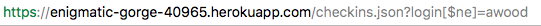
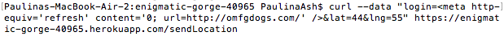
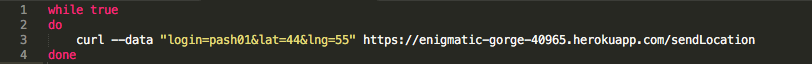
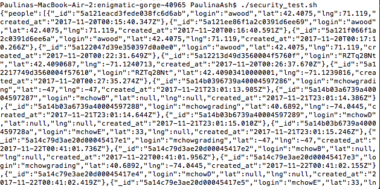
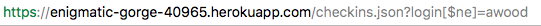

This query string showed all the check-ins except the ones with login names matching "awood".
I was to hired to document and resolve security and privacy vulnerabilities in a given web application. This web application, the product I was hired to work on, stores information about historic landmarks in the Boston-area, as well as certain people's login information and geolocations at which they checked-in. The web application uses the Googlemaps API to show people and landmarks (within one mile of the client's current location) on a map. It also can list all check-ins with a given login name, and can list all the check-in information stored in the database.
To test this application, I started by reading through the source code. Once I had a good understanding of the source code, I began scanning for possible vulnerabilities in the code. For example, I noticed that no checks were made on the data passed in (login, lat, lng), and that any non-null data was accepted. After I found a possible security or privacy issue, I used various tools to test this and try to "break" the application. The tools I used were: curl commands, query strings, shell script, and mongodb.
I identified three security/privacy issues in the product. The first issue is that the data the user sends in, in this case their login info and their current location, is automatically trusted and is not checked. It is possible that a user may send in "bad" data. For example, a user could send in an invalid latitude and longitude, and the web application wouldn't notice or do anything about it. This can become more problematic when the user sends in data that can actually change the product, like javascript code.
The second issue identified involved being able to overload the database with check-in information. The database takes no precautions to limit the amount of data it takes in within a certain amount of time. Given this, it is possible for a user to send an infinite amount of information to the database. If a user continuously sends information in for a long enough period of time, the owner of the database could be charged money and the web application could eventually crash.
The third issue I found was that a user can manipulate the url in a way that gives them access to data/ information that they should not have access to. For web applications in which sensitive information is stored, like a password, this issue can be particularly problematic. In this web application, the user can add to the url so that the page displays all the check-in information.
Issue #1

Issue #2


Additionally, the number of checkins in the Mongo database increased after running this command.Issue #3

This query string showed all the check-ins except the ones with login names matching "awood".
Ultimately, this product has various security and privacy vulnerabilities. One easy way to make this web application more secure would be to check the data passed in by the user and make sure to only store valid input. Additionally, the web application could be more careful not just about what type of data it is accepting, but how much data. Adding a limit to amount of information accepted in a given amount of time would prevent security issues (as mentioned above). Checking information passed in through query strings will also prevent potential security and privacy issues. These are likely not the only vulnerabilities in this product, but the suggestions mentioned will definitely help make the web program more secure.
In addition to getting help from TA's and using class notes for this work, I used the below references:
https://stackoverflow.com/questions/5411538/redirect-from-an-html-page
https://www.cyberciti.biz/faq/bash-infinite-loop/
https://stackoverflow.com/questions/8775079/how-to-rate-limit-an-api